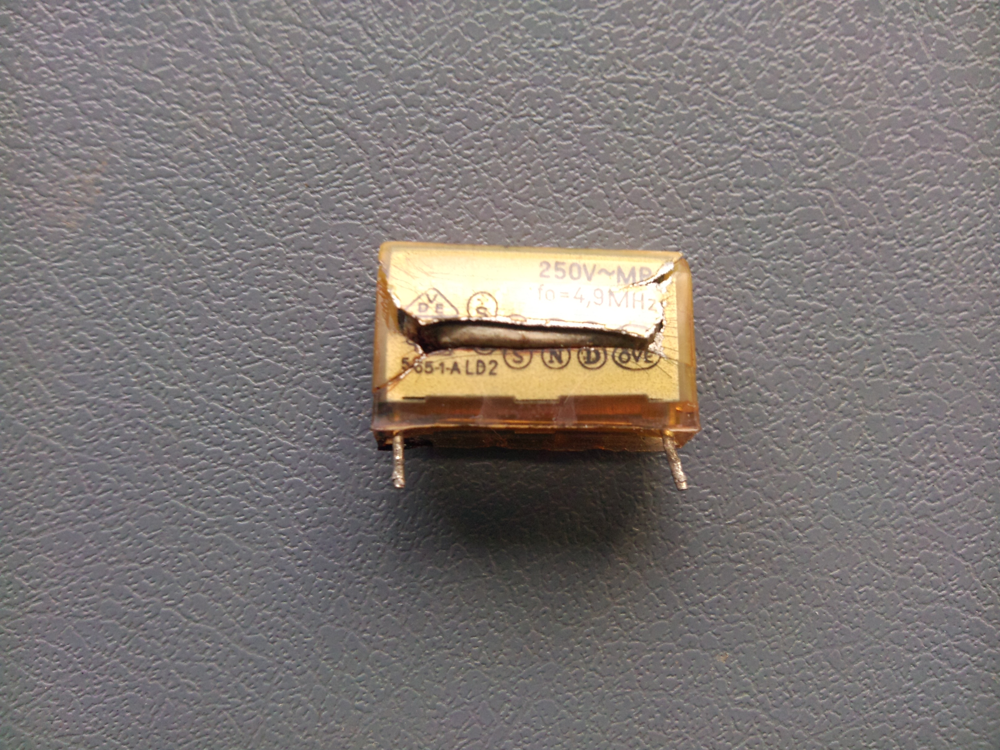
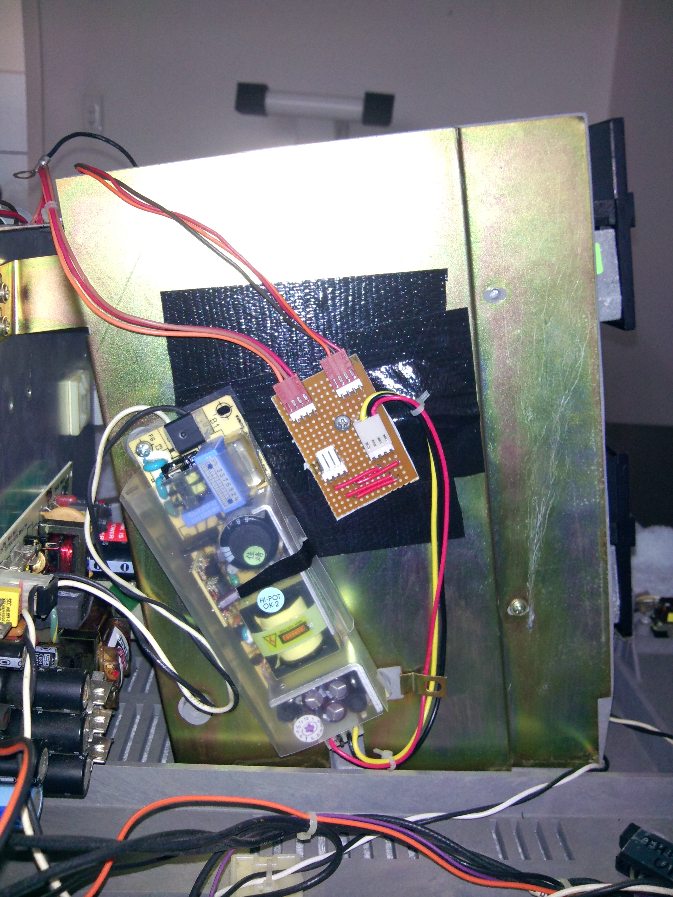

A disk-based Model III will typically have 2 identical power supplies.
Some of the capacitors needed replacing.
After replacing the capacitors on both supplies, I still couldn't get one supply to work correctly. Therefore I found another power supply (with +5V and +12V, but without -12V) and interfaced that instead:
